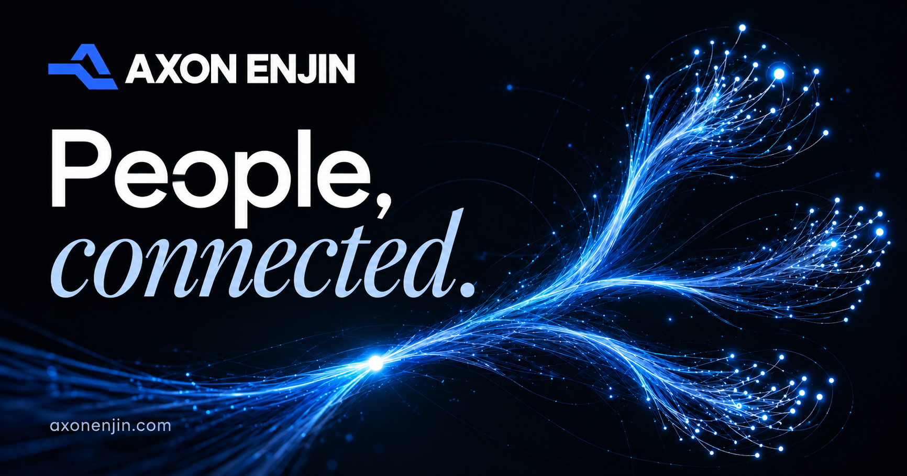
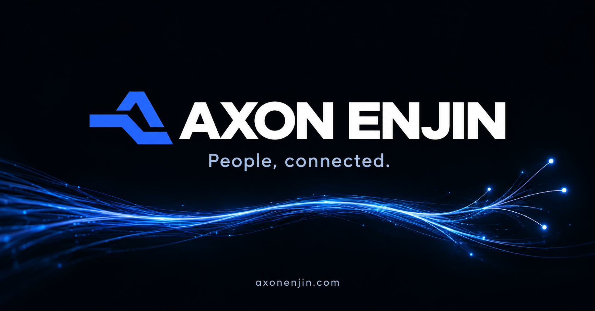
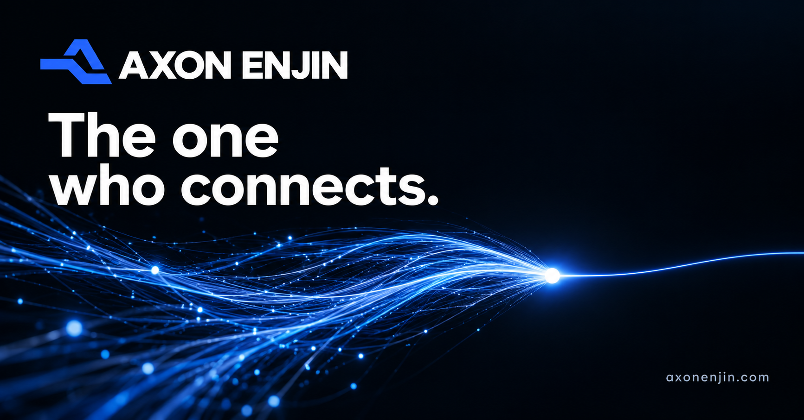

OG image concepts
Three standalone social-sharing image directions. Click a large image to open the original.
1 · People, connected.
The homepage's signature typography and branching nerve artwork.

At a smaller link-preview size:
2 · Brand first
A dominant logo and wordmark, with a minimal signal detail.

At a smaller link-preview size:
3 · The connection
Many fibres converge into one signal beneath the company tagline.

At a smaller link-preview size: